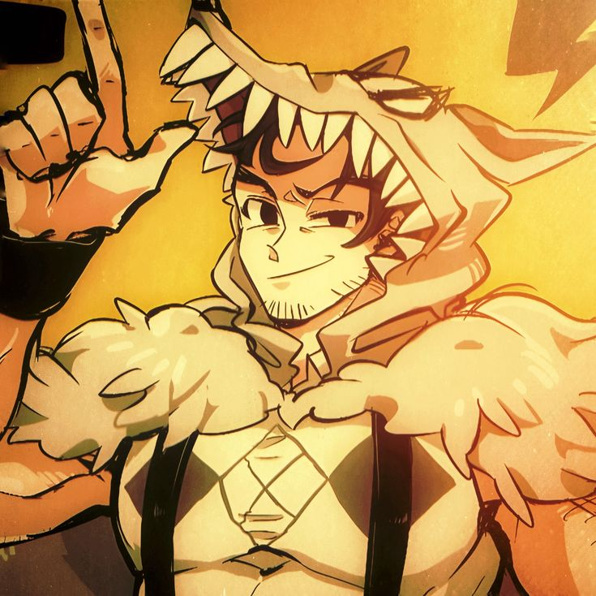

-- Hot-Blooded Wrestler --

Mini-Biography
Beowulf (JP: ベオウルフ Beourufu) is a wrestler who retired at the height of his professional wrestling career, defeating the seemingly unstoppable Grendel, as well as his frenzied Gigan mom when she nearly ate the audience after her son's defeat. Years later Beowulf had become restless, wondering if that was his limit. He announced his plans to fight once again, but what he didn't mention was that it wouldn't be in the ring, since there's no telling where his greatest opponent will show up.
Beowulf Gameplay